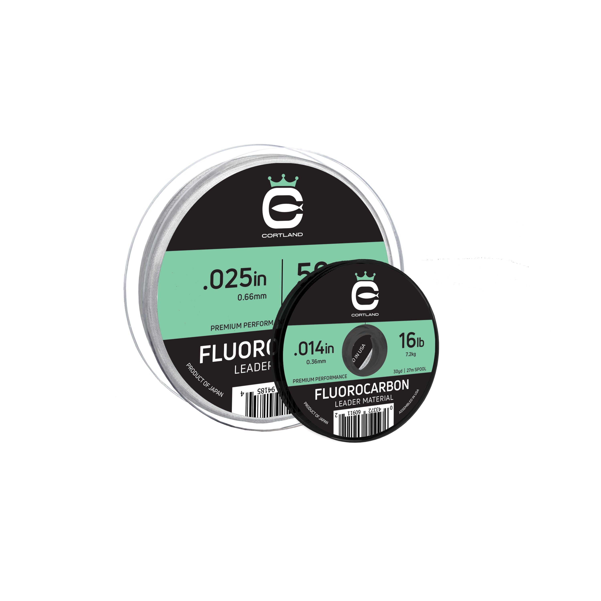

Cortland Fluorocarbon Leader
Leader diameter chart & setup guide

Cortland Fluorocarbon Leader Material is dedicated terminal material, separate from XTR Leader and Ultra Premium Top Secret Tippet. This guide includes 16 chart-supported strengths from 6 to 200 lb, with 30- and 100-yard packages. The 50-lb row is excluded because the manufacturer photo has a conflicting diameter pair.
- Construction
- 100% fluorocarbon leader material
- Listed strengths
- 6-200 lb
- Role
- Terminal leader
Choosing this leader material
Use the ordinary Fluorocarbon Leader Material identity when choosing a bite or terminal section. It is not the XTR formulation or the X-rated Ultra Premium tippet system. Current sale-feed variants are limited, but the product's complete size/length chart remains evidence of the documented range, not a live-stock promise.
Choose your Cortland Fluorocarbon Leader
A package supplies multiple leaders
The package length is the amount you buy, not the leader length to attach to one rig. Allow extra line for knots, tag ends, trimming, and replacing damaged sections.
Amazon links may earn ReelCalc a commission. Check the exact strength, length, and product version before buying.
Cortland Fluorocarbon Leader diameter chart
Cortland's current ordinary Fluorocarbon Leader Material table supplies inch diameter and 30/100-yard length by strength. Millimeters are explicitly converted from inches for included rows. The 50-lb row is held out: the rear package photo prints 0.025 in / 0.66 mm, not the chart conversion of 0.635 mm. No correction or edition equivalence is inferred. Product-feed stock is not used to invent or erase table-listed range.
| Strength | Inches | mm | Package length |
|---|---|---|---|
| 0.007 | 0.1778 | 30 yd, 100 yd | |
| 0.009 | 0.2286 | 30 yd, 100 yd | |
| 0.011 | 0.2794 | 30 yd, 100 yd | |
| 0.012 | 0.3048 | 30 yd, 100 yd | |
| 0.014 | 0.3556 | 30 yd, 100 yd | |
| 0.015 | 0.381 | 30 yd, 100 yd | |
| 0.018 | 0.4572 | 30 yd, 100 yd | |
| 0.021 | 0.5334 | 30 yd, 100 yd | |
| 0.024 | 0.6096 | 30 yd, 100 yd | |
| 0.029 | 0.7366 | 30 yd, 100 yd | |
| 0.035 | 0.889 | 30 yd, 100 yd | |
| 0.041 | 1.0414 | 30 yd, 100 yd | |
| 0.044 | 1.1176 | 30 yd, 100 yd | |
| 0.05 | 1.27 | 30 yd, 100 yd | |
| 0.058 | 1.4732 | 30 yd, 100 yd | |
| 0.062 | 1.5748 | 30 yd, 100 yd |
Choosing and using Fluorocarbon Leader
The ordinary leader chart lists 6, 8, 10 and 12 lb at 0.007, 0.009, 0.011 and 0.012 inch. Choose by the terminal presentation and cover, not the capacity rating printed on a reel.
The next official step is 16 lb at 0.014 inch. The catalog's 15 lb leader has no matching source row and must stay held; it cannot inherit the 16 lb identity.
The included chart extends to 200 lb for heavy terminal applications, with a gap at the held 50-lb strength. The presence of those rows is not a small-tackle recommendation, a knot-strength guarantee or permission to calculate a reel full of leader stock.
Specification-based leader guide, not a hands-on knot, abrasion or breaking-strength test.
Plan replacement sections
Select the leader's finished length, add knot allowance, then budget the number of leaders and trimming reserve from a 30- or 100-yard package. Do not turn package yardage into a recommended leader length.
Separate documented range from stock
The official table links both package lengths to each included strength; 50 lb is held out because of conflicting manufacturer diameter evidence. Only three variants remain in the saved sale feed. This guide cites the table for range and does not claim that every combination can currently be ordered.
Use the exact Cortland family
Keep ordinary Fluorocarbon Leader Material distinct from XTR Leader and Top Secret/Ultra Premium Tippet. Their formulation names, strength labels and diameters must not be swapped.
Plan the line on your reel separately
A short terminal leader is not the working line that fills your spool. Use the actual main line in the calculator or Setup Wizard. A long topshot that occupies substantial spool space needs its own capacity plan.
Fluorocarbon Leader questions, answered
Why is 50 lb excluded?
The source chart prints 0.025 inch, which converts to 0.635 mm. The rear spool in the manufacturer photo prints 0.025 inch / 0.66 mm, with its 50-lb text partly hidden. The competing claims remain unresolved, so no 50-lb row or corrected diameter is supplied.
Is this Cortland XTR Leader?
No. XTR is a separately named Cortland product. This evidence belongs to ordinary Fluorocarbon Leader Material.
Why is 15 lb missing?
The official chart lists 16 lb instead. It does not verify a 15 lb option; the 16 lb specification must not be relabelled.
Are all 30- and 100-yard combinations in stock?
No live-stock claim is made. The complete official table documents those combinations; the saved sale feed exposes only three remaining variants.
Specifications & sources
Cortland's current ordinary Fluorocarbon Leader Material table supplies inch diameter and 30/100-yard length by strength. Millimeters are explicitly converted from inches for included rows. The 50-lb row is held out: the rear package photo prints 0.025 in / 0.66 mm, not the chart conversion of 0.635 mm. No correction or edition equivalence is inferred. Product-feed stock is not used to invent or erase table-listed range.
- Official Cortland leader specification Cortland's current ordinary Fluorocarbon Leader Material table supplies inch diameter and 30/100-yard length by strength. Millimeters are explicitly converted from inches for included rows. The 50-lb row is held out: the rear package photo prints 0.025 in / 0.66 mm, not the chart conversion of 0.635 mm. No correction or edition equivalence is inferred. Product-feed stock is not used to invent or erase table-listed range.